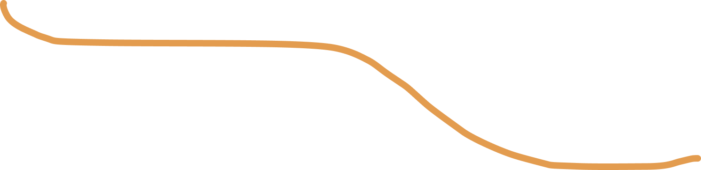

¿El oído humano
puede distinguirlas?


Primero podríamos reconocer un audio generado por IA prestando atención. Mientras que la voz humana varía en tono, ritmo y pausas, las voces sintéticas solían delatarse por patrones demasiado constantes.



¿Crees que sos capaz de distinguir
si una canción es IA?
9000 respuestas
¡SOS PARTE DE
UNA MAYORÍA!

La plataforma de streaming musical Deezer realizó en 2025 un estudio con el propósito de indagar el impacto de esta nueva herramienta digital y su capacidad de reconocimiento en la sociedad.

Resulta prácticamente imposible para el oído humano distinguir música generada por la inteligencia artificial de una compuesta por una persona real.